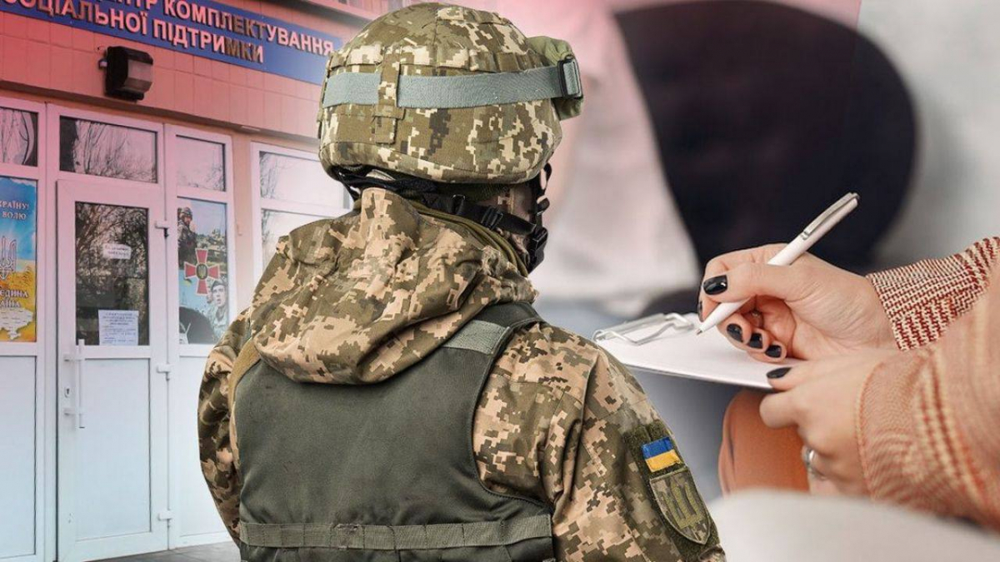
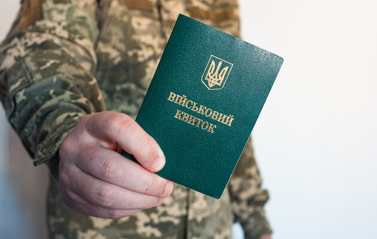
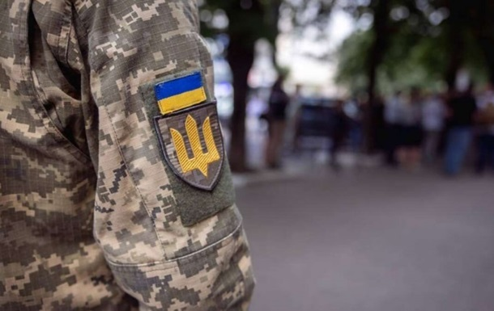

Новина 1: Оновлення у законодавстві про мобілізацію

Уряд України прийняв нові поправки до закону про мобілізацію. Зміни спрямовані на оптимізацію процесу обліку мобілізаційних ресурсів та забезпечення справедливості у розподілі обов'язків серед громадян. Особливу увагу приділено створенню сучасних цифрових платформ для обліку та зменшенню бюрократії. Це дозволить значно прискорити всі процеси і підвищити ефективність.
Новина 2: Технології в мобілізаційному процесі

В Україні почали тестувати нову цифрову платформу для обліку мобілізаційних ресурсів. Платформа дозволяє громадянам оновлювати свої дані онлайн, отримувати інформацію про військовий обов'язок і навіть проходити попередню реєстрацію в електронній формі. Ця ініціатива є частиною програми цифровізації державних послуг. Успішне впровадження платформи планується вже до кінця року.
Новина 3: Волонтери підтримують військових

Волонтери з різних куточків України об'єднують зусилля для підтримки наших військових. Окрім збору гуманітарної допомоги, вони активно співпрацюють із центрами комплектування для забезпечення потреб мобілізованих. Завдяки цим зусиллям військові отримують необхідне спорядження, одяг та засоби для комфортного виконання своїх обов’язків.